Episode 102: ImaNewbie's Tribute to Richard Garriot, aka Lord British. Well, by now you all must have heard that Richard Garriot, the creator of the Ultima Series, and the personna behind the character known as Lord British, has left Origin. Now while some of you may say "Who Cares?", others, myself included, credit him with creating one of the greatest epics in the realms of fantasy gaming. While I have poked fun at Lord British in my 'toons, I think it only fitting that this special 'toon pay tribute to the man and his creation. While Ultima Online may continue to grow and evolve without him, we still owe him a debt of gratitude for all the time and effort he has put into all the Ultima series.
Now for those of you who think the
eight virtues are nothing more than some wierd
names you found on some runes looted off some
poor character you pk'd, here is a little reminder
of what they are all about. As this episode opens
ImaNewbie is strolling along the docks in Britain
one evening, when who should he spy but Lord
British himself, about to board a vessel.
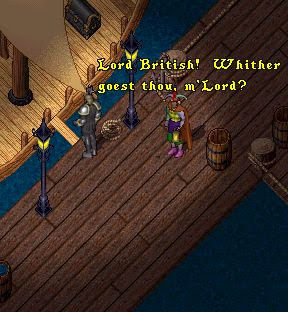
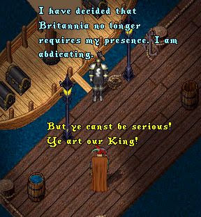
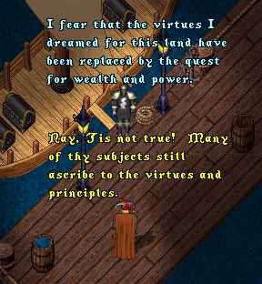
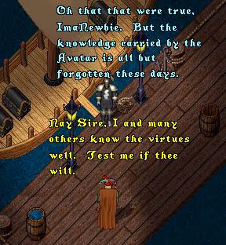
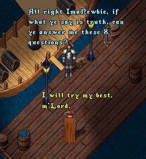
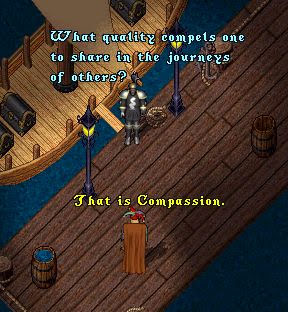
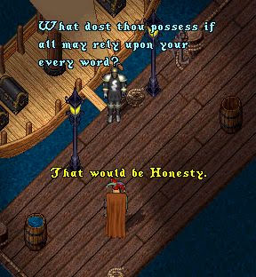
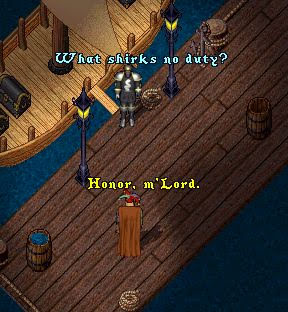
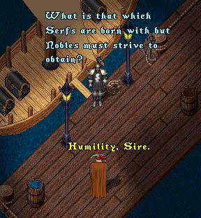
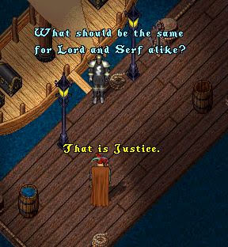
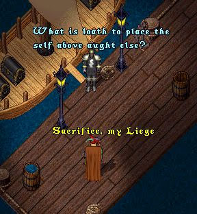
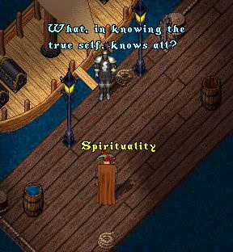
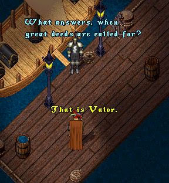
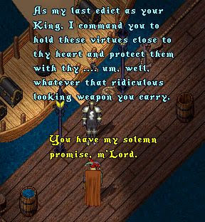
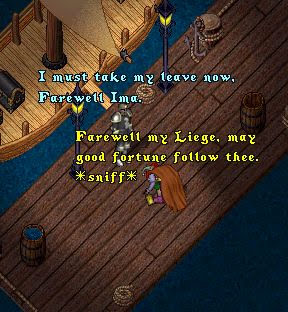